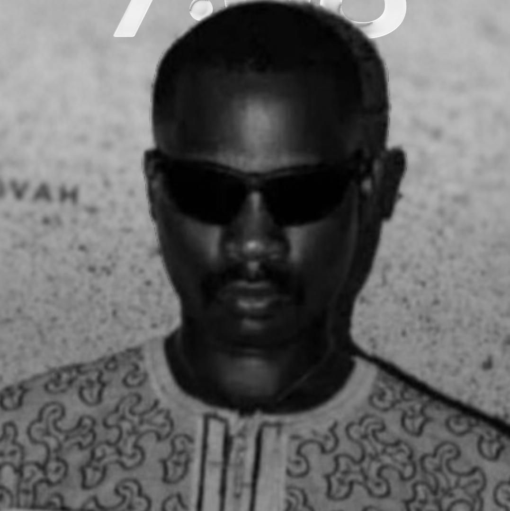

Project Team Members
Our group framework distributes structural responsibilities to ensure clean implementation, organized asset tracking, and precise development execution.
Frimpong Michael
Oversees milestones, coordinates communication structures, and signs off on project review builds.
Group LeaderSulaiman Dawuda
Maintains git flow integrity, establishes structural branches, and handles edge conflict resolution.
Git Repository Manager
Addey Selasi
Builds semantic markup architecture, implements styles, and shapes layout hierarchies.
Design & ContentChristian Nii Anertey Abbey
Curates technical research on cloud models (IaaS, PaaS, SaaS) and synthesizes core presentation data.
Cloud ResearchAbigail Asantewaa Takyi
Executes optimization testing, audits responsive viewports, and ensures form logic integrity.
QA & TestingNewton-Mensah Holy
Manages technical asset documentation, repository README parameters, and final deliverable logs.
DocumentationProject Core Competencies
During the execution of this static platform rollout, our team synthesized concepts spanning modern web servers and local deployment setups.
Version Control
Managing asynchronous team updates using Git branching workflows and centralized repository synchronization.
Static Provisioning
Deploying compiled source networks to edge locations via GitHub Pages automation pipelines.